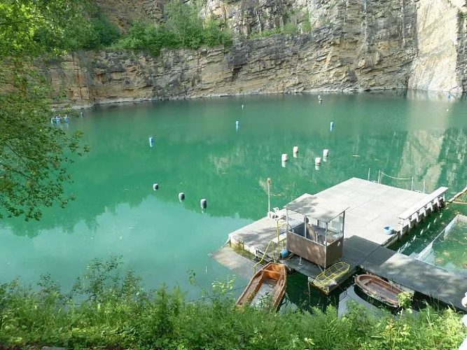

Brevetten 1* tot 4*
Van 1*-duiker (tot 20 m) tot 4*-duiker, het hoogste duikersniveau.
Alle brevetten →De club om te leren duiken. Wij zijn een hechte groep vrijwilligers en duikers uit Mechelen en omstreken. Kom gerust eens kennismaken: van je eerste ademhaling onder water tot instructeur, je duikt nooit alleen.
WVM staat voor Watersport Vereniging Mechelen. In 2023 vierden we ons 60-jarig bestaan.
Neptunus is aangesloten bij Nelos, de Vlaamse duikliga, en bij CMAS. Onze instructeurs hebben diploma’s erkend door Sport Vlaanderen. Veiligheid staat voorop: via zwembadtraining, evaluaties en duidelijke regels leer je stap voor stap veilig duiken.

Een internationaal erkend brevet, opgeleid volgens de kwaliteit van Nelos en CMAS.
Van 1*-duiker (tot 20 m) tot 4*-duiker, het hoogste duikersniveau.
Alle brevetten →Ook instructeur- en technische opleidingen. Onze instructeurs staan klaar van start tot instructeur.
Instructeur →Je duikt nooit alleen. Een ervaren peter begeleidt je bij je eerste duiken.
Hoe het werkt →Steengroeves, Oosterschelde en reizen naar Spanje, Egypte, Maldiven en meer.
Duikstekken →Zwembad Nekkerpool
Nekkerspoel-Borcht 19, 2800 Mechelen
Onze thuisbasis, het Provinciaal Domein De Nekker in Mechelen.





Geen verplichtingen. Vul het formulier in of bel Jan Pacqué op 0479/99.75.03.